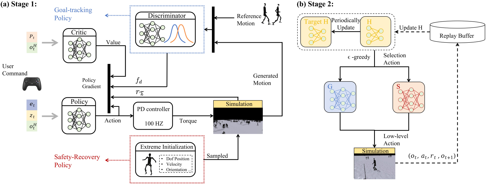

Abstract
Humanoid robots, capable of assuming human roles in various workplaces, have become essential to the advancement of embodied intelligence. However, as robots with complex physical structures, learning a control model that can operate robustly across diverse environments remains inherently challenging, particularly under the discrepancies between training and deployment environments. In this study, we propose HWC-Loco, a robust whole-body control algorithm tailored for humanoid locomotion tasks. By reformulating policy learning as a robust optimization problem, HWC-Loco explicitly learns to recover from safety-critical scenarios. While prioritizing safety guarantees, overly conservative behavior can compromise the robot's ability to complete the given tasks. To tackle this challenge, HWC-Loco leverages a hierarchical policy for robust control. This policy can dynamically resolve the trade-off between goal-tracking and safety recovery, guided by human behavior norms and dynamic constraints. To evaluate the performance of HWC-Loco, we conduct extensive comparisons against state-of-the-art humanoid control models, demonstrating HWC-Loco's superior performance across diverse terrains, robot structures, and locomotion tasks under both simulated and real-world environments.
Research Method
This section introduces the research methods used in the paper, such as experimental design and data collection methods. [Detailed research method text]

Experiment
Describe the experiment process in the paper, including experimental setup, data collection, etc. [Detailed experiment text]
Conclusion
Summarize the main conclusions of the research, as well as the contributions of this research to the field and future research directions. [Detailed conclusion text]